斗六菓子位在斗六市西平路上，對面是鎮西國小。 後面則是著名的雲中街文創聚落，很多日式建築。 去年也曾來過，喜歡那裡靜靜的氛圍，有不少寶可以挖。
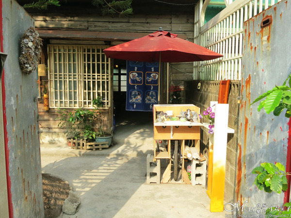這間是傳統的老房子，由一對年輕夫妻所經營。 原本其實是一間廢墟，後來經過他們每天的整理，才有現在新的面貌。 而且很巧的原來他們夫妻也住在台中，是去年7月左右才搬過來。 在異地遇到同鄉的，格外親切十足。
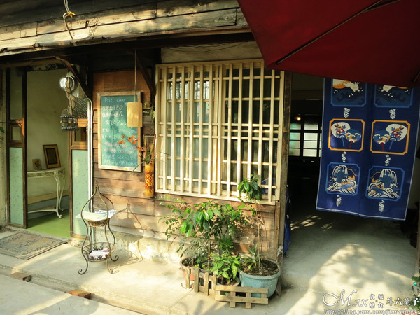雖然沒有雲中街來的華麗，但所見到的全是夫妻的心血。 這天是下午來訪，陽光灑落在老屋上，也滿有味道的。
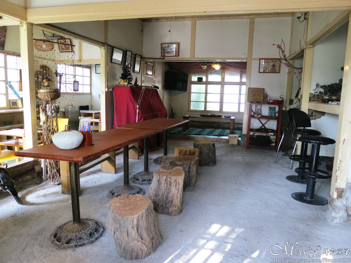老宅內裝潢與擺飾，一切走的是很隨性風格。 沒有太制式，許多小物，多了一分溫暖的感覺。 另外有台鋼琴，老闆娘還請他兒子演奏給我們聽，相當悅耳。
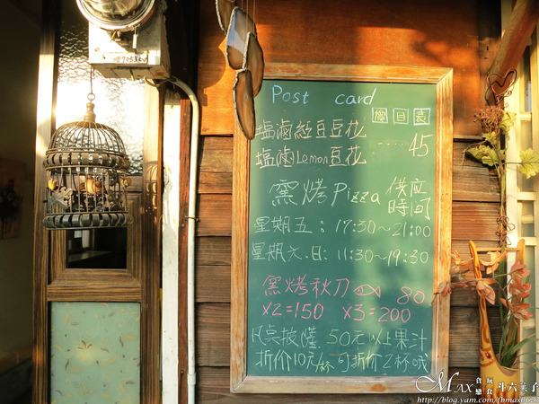小黑板上面有店內手寫簡易菜單及窯烤供應時間 鹽滷豆花及窯烤Pizza是人氣商品，也是目前固定不會更動的菜單。
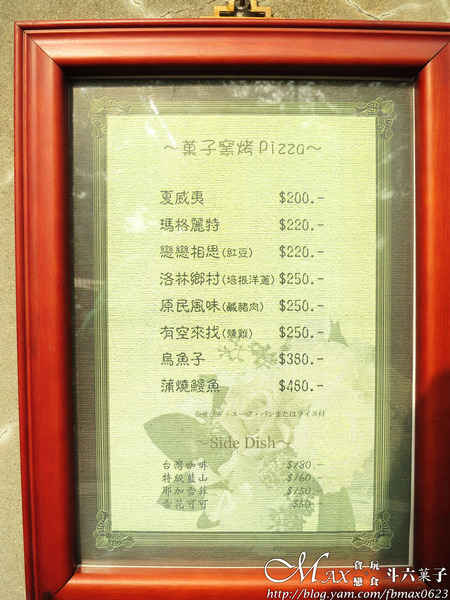窯烤Pizaa的口味有多種，其中烏魚子和鰻魚最吸引我們。 有特別詢問，店家堅持選用雲林在地的食材來製作。 老闆對於手沖咖啡也特別有專研，當天有請我們試喝，豆子的品質很好。
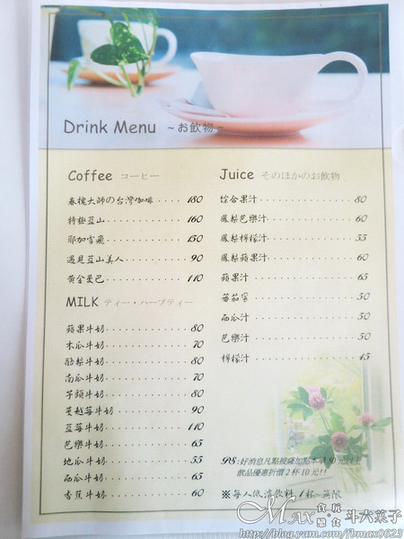不想吃點東西的朋友，也有飲品及果汁的選擇。
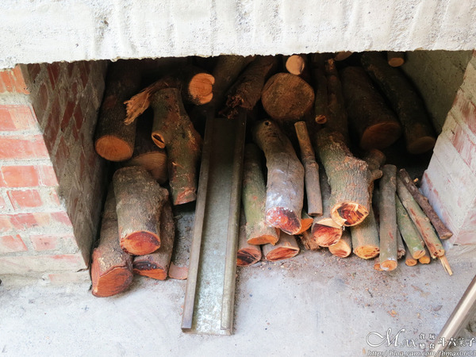因為已經吃飽，不然很想再點Pizza來試試。 這個窯可是夫妻一磚一瓦所慢慢搭建而成，恆溫的效果也好，木頭是用龍眼木。
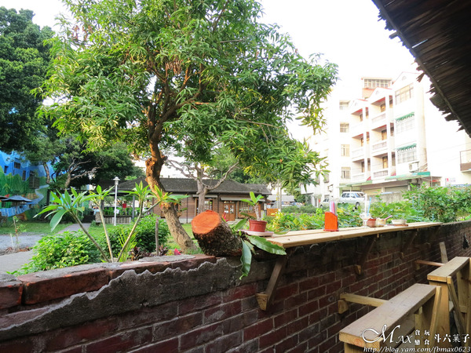原用想坐在屋內用餐，老闆娘特別推薦這個位子，別有洞天。 視野之好，正對面就是雲中街，我們默默發懶的待了一個下午。
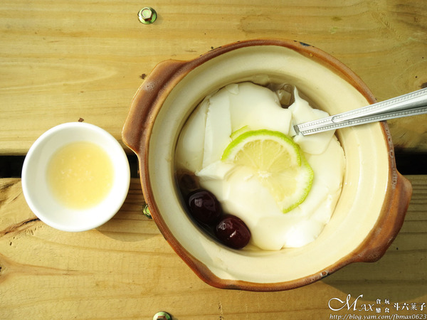用的是非基因黃豆所製作，無任何消泡劑等。 講究天然就是希望給客人吃到的是最健康、安心的產品。 另附一小碟現打的檸檬汁。
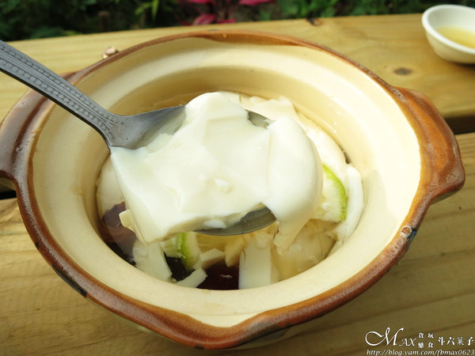豆花僅添加桂圓及紅棗，再切入檸檬片。 豆花的質地很細緻，軟嫩又滑順，吃的出原味豆花的香氣。 適時的倒入檸檬汁，豆花的味道會更出來，真的很好吃。
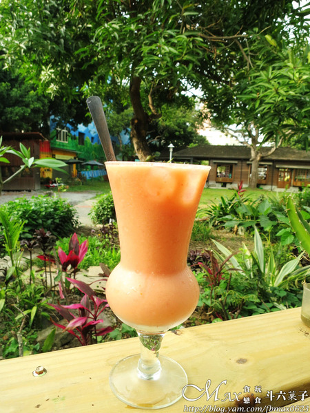 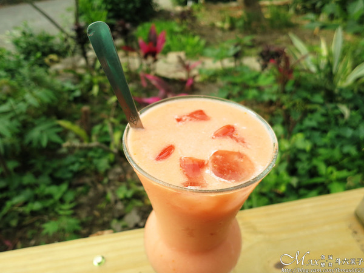果汁是現打，多達7種新鮮的水果。 甜度如沒告知一律是半糖，如需調整記得告知老闆娘。 飲料端上來的時候嚇到我們，因為真的超大一杯。 在這炎熱的午後來上一杯沁涼果汁，十分解渴又消暑。 這一杯喝完超有飽足感，根本已快投降了...
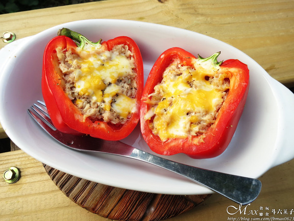剛好老闆娘在研發新的產品，就特別請我們試吃看看。 第一次看到彩椒做成的輕食，顏色很繽紛呢～
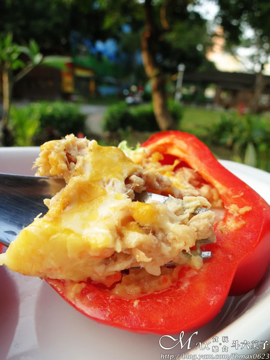市場買的甜椒，將其剖半，內餡是有鮪魚、薯泥及洋蔥與起司去烤過。 一口吃下，有甜椒與餡料的中和之下，甜椒居然變甜了。 內餡的調味也很簡單，不會搶味，好健康的一道輕食，好美味。 雖然多數人對於青椒類會懼怕，這道新的創意餐點很值得試試。
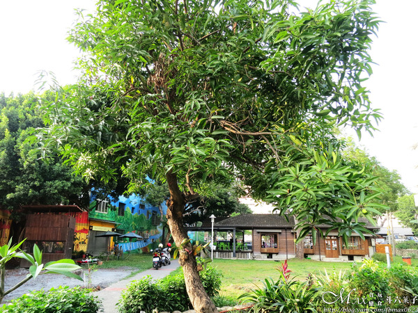就這樣悠閒的在這渡過了美好的週末午後。 吃著美味的餐點，很放鬆的小祕境。 來這會有種回到家的氣氛，夫妻也很客氣。 結束後可以再到雲中街文創聚落逛逛，增加氣質。 找時間我會再來吃Pizza，私心的景點推薦給大家唷～
引自:http://blog.yam.com/fbmax0623/article/90775084